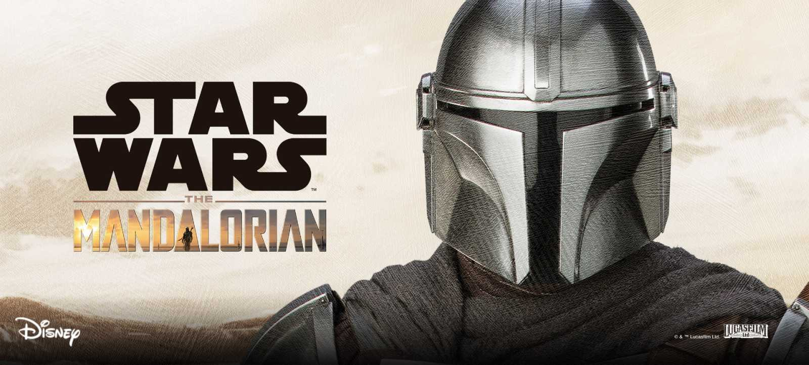

Ahsoka Tano es una ex-Jedi y guerrera togruta, reconocida por su valentía y su firme sentido de la justicia.
Originalmente fue la aprendiz de Anakin Skywalker, con quien desarrolló un vínculo profundo y aprendió los caminos de la Fuerza, aunque eventualmente se separó de la Orden Jedi debido a sus diferencias ideológicas.
Como guerrera, es experta en el uso de dos sables de luz, los cuales maneja con destreza en combate, mostrando una habilidad excepcional en la lucha contra el Imperio y sus aliados oscuros.
A pesar de su distanciamiento de la Orden, sigue guiada por un fuerte compromiso de proteger a los inocentes y de oponerse al lado oscuro.
Cuando se cruza con el Mandaloriano, ayuda en la búsqueda del pasado de Grogu y se convierte en una aliada crucial en la resistencia contra las fuerzas imperiales.
Boba Fett es un legendario cazarrecompensas y guerrero, conocido por su habilidad y determinación en el combate.
Hijo del renombrado cazarrecompensas Jango Fett, Boba hereda su armadura mandaloriana y crece para convertirse en uno de los cazadores más temidos de la galaxia.
Con su icónica armadura de beskar, su jetpack y su arsenal de armas, Boba se destaca en el rastreo y captura de objetivos, siguiendo siempre un código de honor propio.
A pesar de su vida de mercenario, muestra un lado honorable y firme lealtad a sus aliados, como cuando ayuda a Din Djarin en su misión para proteger a Grogu.
Su retorno, tras sobrevivir al sarlacc en Tatooine, marca una nueva etapa en su vida, en la que busca recuperar su legado y establecer su propio dominio en los confines de la galaxia.